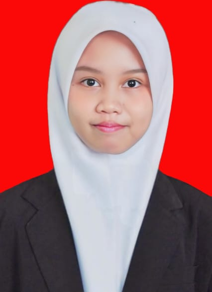

|  | |
Informasi PribadiNama: Silva Oktaria Putri Tanggal Lahir: 19 Oktober 2004 Alamat: Jl. Haji Komarudin Gg. Senen, Rajabasa |
Tentang SayaPerkenalkan Nama saya Silva Oktaria Putri Saya biasanya dipanggil Silpa Saya adalah Mahasiswa Semester 3 Teknik Informatika Institut Teknologi Sumatera |
Pengalaman
|
|
Pendidikan
|
|
KontakEmail: silva.122140032@student.itera.ac.id Instagram: silvaok_ |
|